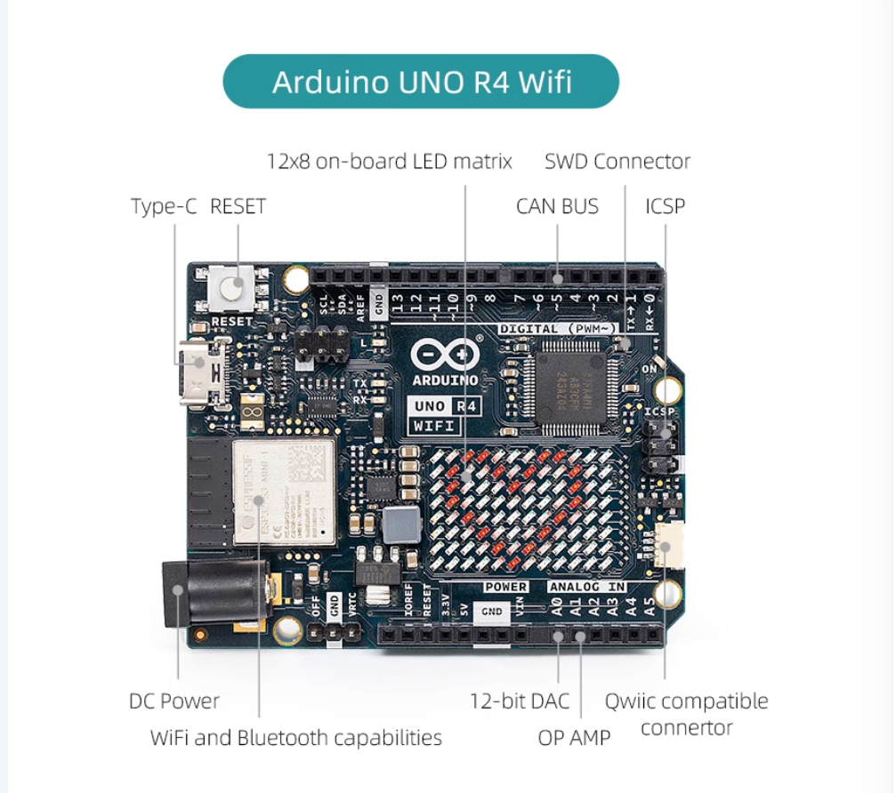

Arduino UNO R4 Wifi
UNO R4 Wifi
The Arduino UNO R4 WiFi is designed around the 32-bit microcontroller RA4M1 from Renesas while also featuring a ESP32 module for Wi-Fi® and Bluetooth® connectivity. Its distinctive 12x8 LED matrix makes it possible to prototype visuals directly on the board, and with a Qwiic connector, you can create projects plug-and-play style.
Feature
The MCU on the board is the high performance Renesas RA4M1 (Arm® Cortex®-M4) with a 48 MHz clock speed, 32 kB SRAM and 256 kB flash memory. This MCU features an RTC, a DAC and a CAN bus and has support for HID via USB.
The UNO R4 WiFi also features an ESP32-S3 for Wi-Fi®/Bluetooth® connectivity, which can also be separately programmed via a specific header.
Details of UNO R4 WiFi

-
Arduino Cloud The UNO R4 WiFi is compatible with the Arduino Cloud platform. Build IoT projects in just minutes! Go to Platform
-
Cheat Sheet A reference to all technical features on this board, with pointers to additional documents. Cheat Sheet
-
5 V Operating Voltage The RA4M1 and the GPIOs of this board operates on 5 V.
-
LED Matrix Learn how to create animations and graphics on the 12x8 LED matrix. Documentation
-
Real-Time Clock (RTC) Keep track of time & date and set alarms with the built-in RTC. Documentation
-
Digital-to-Analog Converter (DAC) Use the onboard 12-bit DAC to build sophisticated audio projects. Documentation
-
Mouse/Keyboard Emulation (HID) Build game controllers by emulating a mouse/keyboard. Documentation
-
Input Voltage Power your UNO R4 board through the VIN pin or the barrel jack at up to 6-24 V.